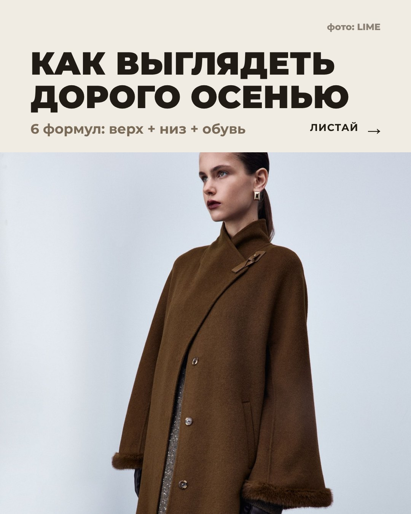
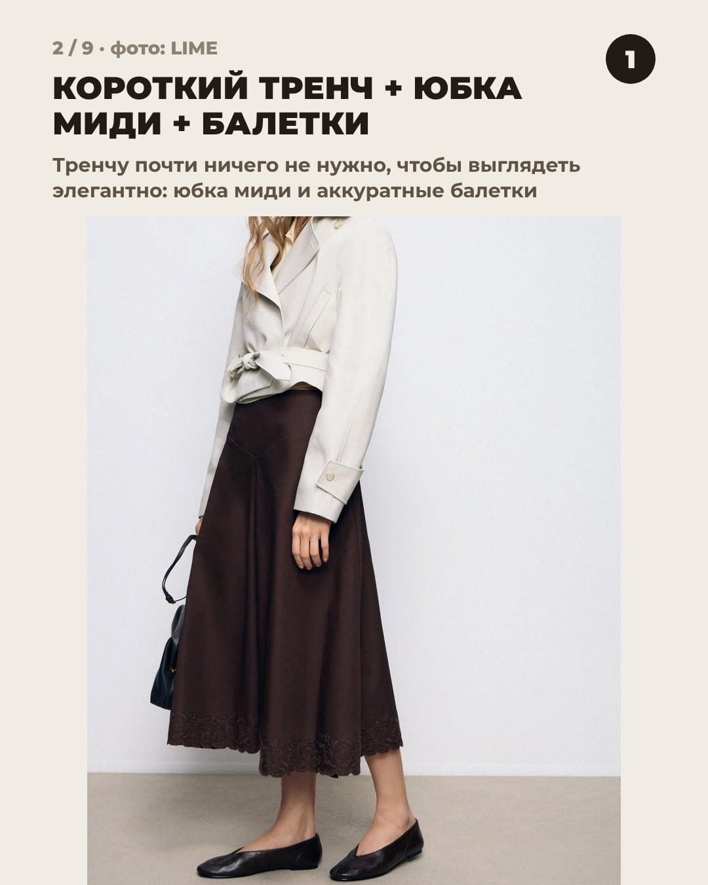
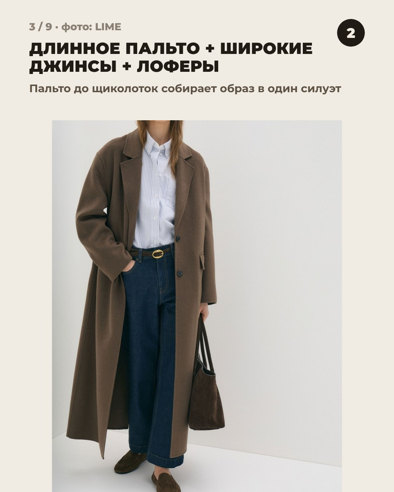
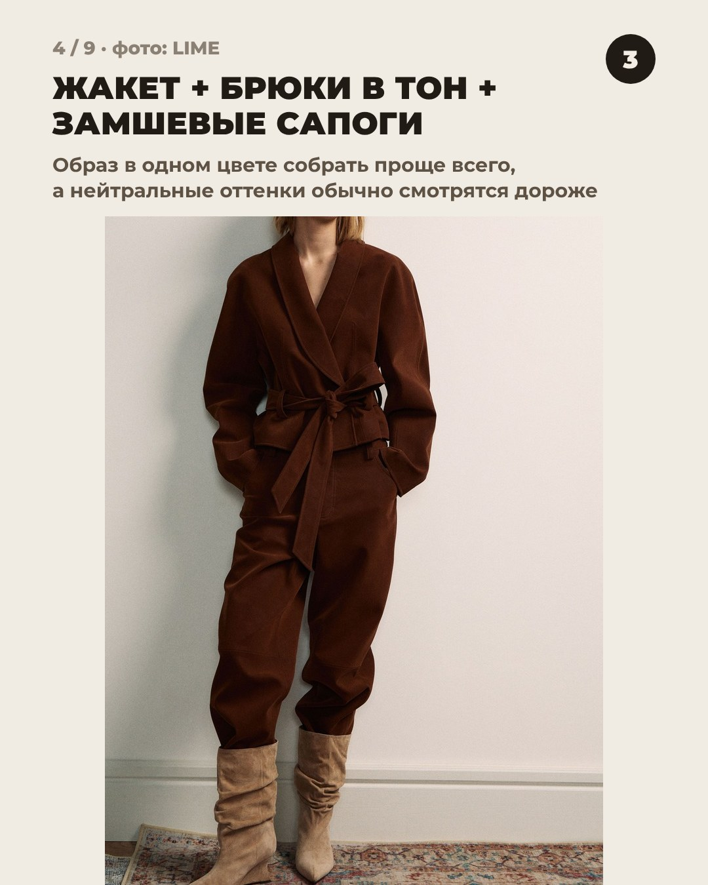
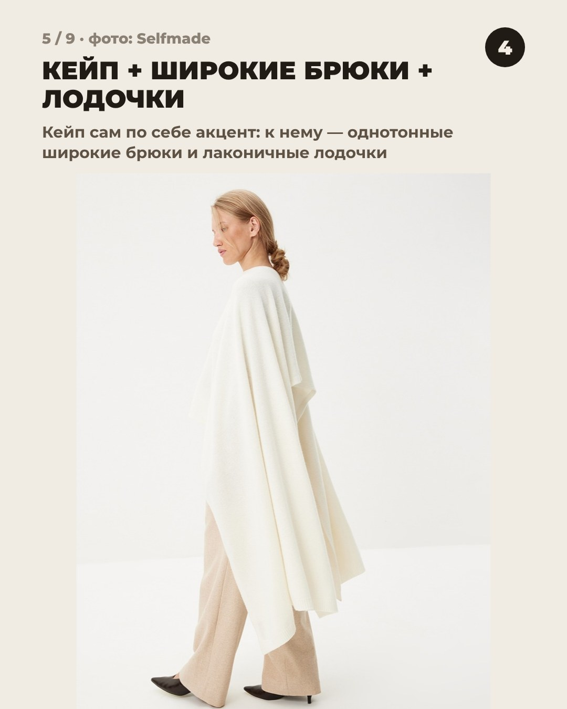
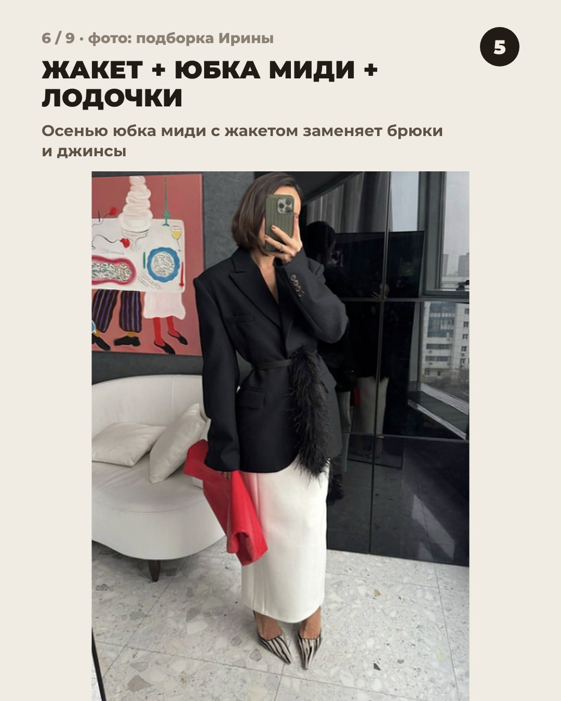
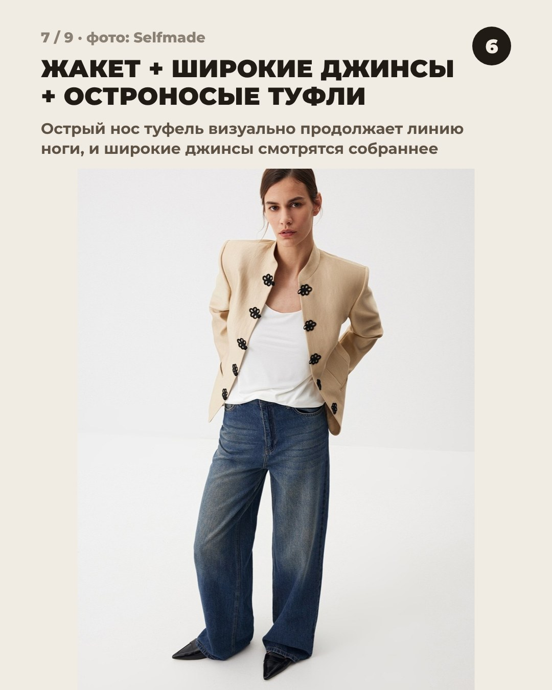
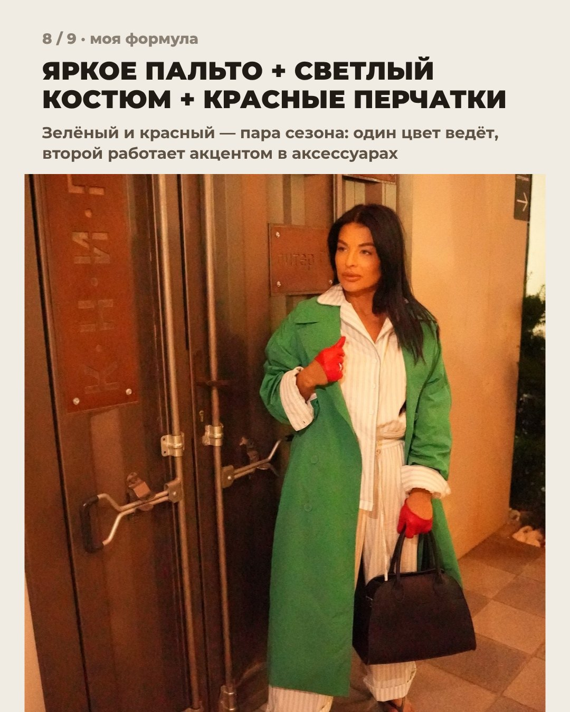
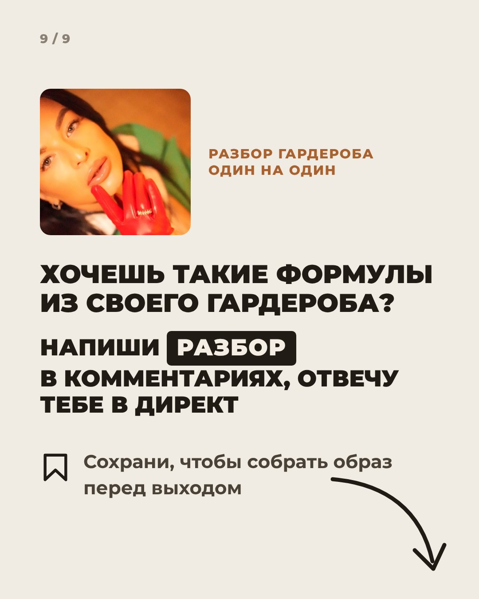

Иirina_sitko23









irina_sitko23 Дорого выглядит не цена, а сочетание. Собрала 6 формул на осень по схеме «верх + низ + обувь»: короткий тренч с юбкой, длинное пальто с джинсами, образ тон в тон, кейп с широкими брюками, жакет с юбкой миди и жакет с широкими джинсами. Шесть образов — настоящие фото: карточки Befree, LIME, Sela, Selfmade и образ из моей подборки.
На 8 слайде моя формула: яркое пальто, светлый костюм и красные перчатки в контраст.
Сохрани, чтобы собрать образ перед выходом.
Хочешь такие формулы из своего гардероба? Напиши РАЗБОР в комментариях, отвечу тебе в директ, разберём твои вещи один на один.